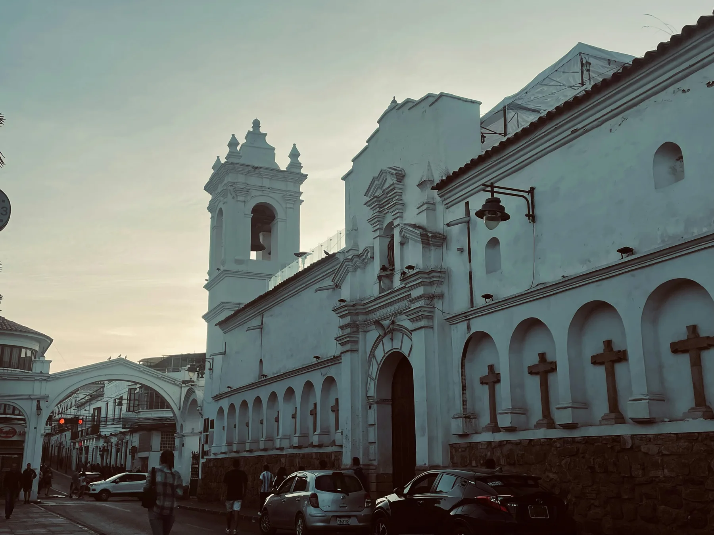

Me Gusta Sucre
We were born here, under an Andean light that makes the white walls glow at dusk like nothing else on earth. Sucre isn't just Bolivia's constitutional capital — it's our home, and the place where Bolivia found its identity. We built Me Gusta Sucre to share what no guidebook can manufacture: the knowledge that only comes from a lifetime of walking these streets. What you'll find here wasn't assembled by an algorithm or a passing tourist. It's what we tell our guests on their first night: the corners that don't appear on maps, the places where locals actually eat, and the living history behind every whitewashed facade.
Me Gusta Sucre Team
Sucre, Chuquisaca · All our lives
About Sucre
Sucre is Bolivia's constitutional capital and one of South America's best-preserved colonial cities. Its whitewashed baroque architecture earned it the nickname La Ciudad Blanca — and UNESCO recognition in 1991.
At 2,810 meters, it sits low enough for easy acclimatization, yet high enough to guarantee cool evenings and the brilliant Andean light that makes every street corner worth photographing.
The city is compact, walkable, and deeply student-oriented — it's home to one of the oldest universities in the Americas (USFX, founded 1624), making it South America's top destination for Spanish immersion.
Why travelers love it
Year-round sunshine,
no crowds.
Must-See Spots
Nine places where Bolivia's history began and its daily life still unfolds.

Central Square
The heart of the city. Every Sunday, the local military band plays, families gather for ice cream, and the colonial history feels current.

Museum
The birth certificate of Bolivia was signed here. A serene museum with one of the finest colonial courtyards in South America.

Viewpoint
The best sunset in the city. A steep walk up, but the orange glow over the white roofs is worth every step.

Architecture
Baroque masterpiece on the main plaza. The bell tower at sunset is unmissable. Small religious museum inside.

Architecture
One of the oldest universities in the Americas, founded in 1624. Its colonial courtyard is among Sucre's finest hidden gems.
Dinosaur Park
The largest collection of dinosaur footprints in the world — over 5,000 tracks on a near-vertical cliff face, 68 million years old.

Museum — Indigenous Textiles
World-class collection of Jalq'a and Tarabuco indigenous textiles. Master weavers work on-site. Two blocks from the plaza.

Rooftop — Church Towers
Walk across the church rooftop between colonial bell towers. The most intimate panorama in the city — closer and quieter than Recoleta.

Architecture — 1538
Founded in 1538, one of the oldest churches in South America. The bell tower houses La María, the colonial bell that rang the first cry of independence.
Day Trips from Sucre
The most authentic indigenous market in Bolivia. Every Sunday, Yampara and Jalq'a communities gather to trade textiles, food, and crafts — primarily with each other, not with tourists.
A collapsed volcanic crater turned lush hidden valley, with Inca trails, Jalq'a communities, and rock formations that look borrowed from another planet.
Once the largest city in the world. The Cerro Rico silver mine financed the Spanish Empire for two centuries. At 4,090m — bring altitude medication.
Ask us about transport →Pre-Incan ceremonial site at 3,600m, with a section of original Inca road, ancient shrines still in active use, and 360-degree views over the Chuquisaca valleys.
Ask us about transport →A natural rock bridge in the Chuquisaca countryside, 30km from the city. Quiet, unhurried, and almost entirely off the tourist map.
Ask us about transport →Eat & Drink
Sucre has one of Bolivia's richest food traditions — built around slow-cooked stews, handmade doughs, and a spice culture unlike anywhere else in the country.
The defining dish of Sucre. Spiced pork sausage grilled over charcoal and served with mote (hominy corn), potatoes, and the local ají. Order it from a street stall near the market — never at a tourist restaurant. The version at Mercado Central at noon is the benchmark.
Bolivia's most beloved pastry — a crimped, baked dough filled with slow-cooked beef or chicken stew in a gelatin broth that liquefies as it bakes. Gone from the best stalls by 10am without exception. Ask your hotel where the closest good one is the night before.
The Sunday stew of Sucre. A slow-cooked tripe and pork soup with hominy, chicha, and ají — traditionally eaten at home after church. Some restaurants serve it on Sundays only. If you're in the city on a Sunday and adventurous, this is the most authentic meal you can have.
Chicken braised until tender in a deep, slow-cooked sauce that takes hours to prepare. A Chuquisaca classic — order it at a family-run restaurant, never at a place with a laminated menu.
Sucre is Bolivia's chocolate capital — the country grows some of the world's finest cacao in the lowland departments, and the city's chocolate makers have been refining it here for generations. Buy a bar at Taboada or Para Ti on Calle Arenales, and bring several home.
A herbal liqueur made from wormwood (ajenjo), produced exclusively in Chuquisaca and found almost nowhere else in Bolivia. Served ice-cold as a digestif after a heavy meal. It tastes like nothing else. Try it once — you'll either hate it or bring two bottles home.
Ingrediente secreto
El Ají de Sucre
Un chile cultivado exclusivamente en Chuquisaca, único en toda Bolivia. Si el cocinero lo usa, estás comiendo lo auténtico. Pídelo por nombre en cualquier mercado.
Las Crónicas
Things a lifetime in Sucre teaches you that no algorithm has thought to ask about. We write them down here.

El acento más neutro del continente. Ciudad universitaria desde 1624. Inmersión total a bajo costo.

Altitude, currency, transport, weather, safety. The practical stuff — no filler.

Dinosaurs, safe cobblestones, and a pace children can follow. Why Sucre works brilliantly for families.

Salteñas before 10am, Tarabuco by van, and mondongo at 3pm. Sunday in Sucre has a rhythm all its own.
Peña music, lit cobblestones, and a cultural scene that moves at student pace. The city doesn't sleep early.
While you're here
Language school, boutique hostal, and specialty café — all within walking distance of everything in this guide.

Language School · Audiencia #97
Sucre is South America's #1 city for Spanish immersion. Morning classes with native teachers — afternoons are yours.
from $120 / week
Start Learning Spanish →Boutique Hostal · La Paz #571
Steps from Plaza 25 de Mayo. Breakfast included. A local team that knows Sucre inside out.
from $18 / night
See Rooms & Rates →Specialty Café · Bolivar #603
Bolivian single origin, homemade pastries, and a colonial terrace open to the street.
Mon–Sat · 8am–8pm · Open Now
See the Menu →